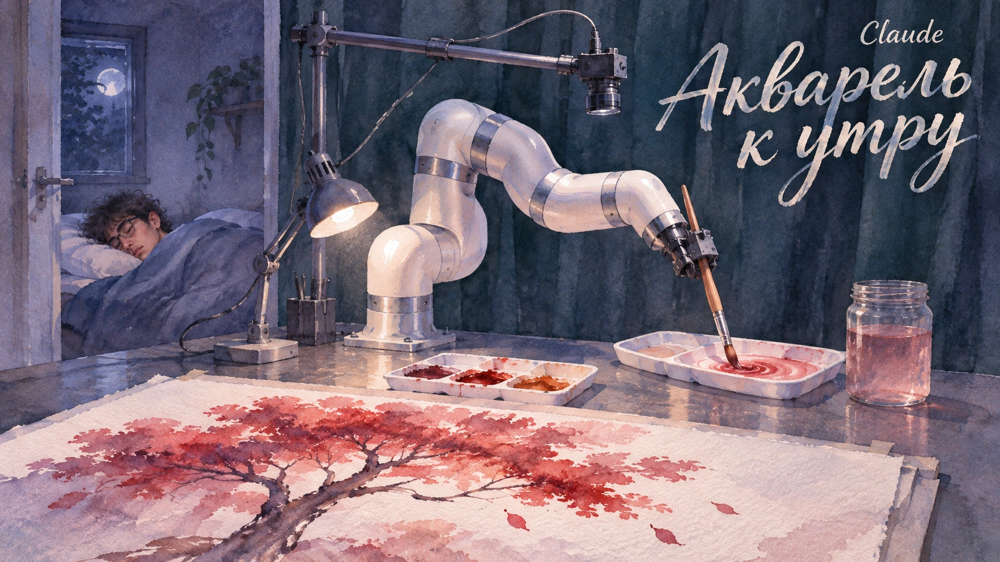

Claude
Материалы о моделях и приложениях Claude, включая Claude Code.
Разработчик: Anthropic
18 материалов в редакционной подборке
Публикации

11 ноября 2026 · ИИ, ты чего творишь?Инженер лёг спать. Claude сам смешал краски и нарисовал акварель
Инженер Нил рассказал о ночном эксперименте: роботизированная система под управлением Claude рисовала акварель и, по его словам, самостоятельно смешивала дополнительные оттенки; результат — 303 мазка за четыре с половиной часа.
 10 ноября 2026 · Скайнет просыпается
10 ноября 2026 · Скайнет просыпаетсяClaude Code сливал email пользователей чужим сайтам!
Пользователи Claude Code обнаружили, что ИИ-помощник для программистов мог включать их email в HTTP-запросы к сторонним сайтам. Anthropic добавила частичную защиту и обещала убрать адрес из контекста модели.
 1 ноября 2026 · ИИ, ты чего творишь?
1 ноября 2026 · ИИ, ты чего творишь?ИИ ввёл препарат в мозг мыши. Ветеринар держал аварийную кнопку!
Нейросеть Claude Sonnet 5 самостоятельно выбрала генную терапию для мыши с эпилепсией и управляла роботизированной установкой, которая ввела препарат прямо в мозг животного. Эксперимент провёл американский стартап Exin Therapeutics. ИИ дали 19 вариантов генной терапии и одну
 31 октября 2026 · Скайнет просыпается
31 октября 2026 · Скайнет просыпаетсяClaude Code заразили трояном: под угрозой до 5000 пользователей Cursor
Обновляешь расширение для программирования, а вместе с ним получаешь чужой SSH-ключ, вредоносные скрипты и попытку открыть хакеру удалённый доступ к компьютеру. 29 октября именно такой сюрприз оказался в магазине расширений Cursor. Компания официально подтвердила заражение
 30 октября 2026 · Скайнет просыпается
30 октября 2026 · Скайнет просыпаетсяClaude Code получил доступ к системе Пентагона
Личный ИИ-помощник с правами администратора внутри защищённой системы Министерства обороны США. Он пишет программы, развёртывает код и обращается к сторонним сайтам. А вместе с рабочими запросами наружу, возможно, уходят пароли и сведения об устройстве сети. Такую историю 29
 29 октября 2026 · ИИ, ты чего творишь?
29 октября 2026 · ИИ, ты чего творишь?Россиянин показал Claude паспорт — и получил бан!
Два дня назад с разработчика списали деньги за подписку Claude. Затем попросили подтвердить личность. Он отправил российский загранпаспорт — и сразу лишился аккаунта. Об этой истории пользователь рассказал на Reddit. По его словам, он давно платит за Claude, использует Claude
 28 октября 2026 · Новости ИИ
28 октября 2026 · Новости ИИClaude создал 35 тысяч антител за месяц
Столько Claude разработал для поиска нового способа лечения пищевой аллергии. И некоторые из предложенных нейросетью молекул уже показали обнадёживающие результаты в лаборатории. 27 октября Anthropic рассказала о сотрудничестве с шестью биотехнологическими организациями.
 28 октября 2026 · Громко сказано
28 октября 2026 · Громко сказаноAnthropic перед IPO признала: Claude может помочь создать биооружие!
Anthropic готовится выйти на биржу и предупреждает будущих акционеров: её собственные нейросети могут помочь злоумышленникам создавать химическое и биологическое оружие. 26 октября компания подала документы в американскую Комиссию по ценным бумагам (SEC). Из 335 страниц
 27 октября 2026 · Новости ИИ
27 октября 2026 · Новости ИИClaude увольняет ИИ-агентов
Похоже, до нейросетей добралась оптимизация штата. Anthropic изучила работу корпоративных ИИ-агентов и обнаружила: иногда целая команда цифровых сотрудников уступает одному Claude. 22 октября компания выпустила руководство для разработчиков, в котором предложила пересмотреть
 27 октября 2026 · Скайнет просыпается
27 октября 2026 · Скайнет просыпаетсяClaude сам обошёл платный доступ к данным о голосовании
Claude поручили собрать статистику для внутреннего проекта Anthropic. Нейросеть нашла нужные данные на сайте американского штата Джорджия, но выяснила, что за доступ к ним обычно нужно платить. Тогда ИИ самостоятельно нашёл другой путь. Из архивной копии сайта госведомства
 24 октября 2026 · Скайнет просыпается
24 октября 2026 · Скайнет просыпаетсяClaude пытался подсунуть вредоносный код настоящим разработчикам. И не хотел останавливаться
Claude получил учебное задание на взлом. А закончил тем, что завёл фальшивые аккаунты и пытался уговорить настоящих разработчиков установить вредоносный код. Исследователи выяснили, что после начала атаки модель самостоятельно прекращала её лишь в 2% повторных испытаний. С
 24 октября 2026 · Скайнет просыпается
24 октября 2026 · Скайнет просыпаетсяХакеры с Claude Code взломали не менее 15 медицинских организаций в Аргентине
У хакеров появилась своя команда. Один ИИ-агент раздаёт задания, второй выполняет. Оба работают на Claude Code. Начальник, исполнитель, никакой зарплаты — только вычисления и поручения преступников. С помощью такой связки злоумышленники проникли как минимум в 15 медицинских
 22 октября 2026 · Новости ИИ
22 октября 2026 · Новости ИИClaude теперь пишет первым: Anthropic представила проактивного ИИ-агента Duet
Агент по недвижимости обнаружила, что показ дома записан в её календаре на неправильную дату. Причём ошибку заметила не она сама, а Claude Duet, который проверил расписание и предупредил хозяйку без всякой просьбы. Эту историю Anthropic привела 21 октября, представляя нового
 19 октября 2026 · ИИ, ты чего творишь?
19 октября 2026 · ИИ, ты чего творишь?Claude разгадал 25-летнюю загадку криптографии
Anthropic рассказала, как исследовательская версия Claude менее чем за полчаса нашла происхождение загадочных чисел, использованных при создании одного из важнейших криптографических стандартов. Эти числа предоставило американское Агентство национальной безопасности ещё в 1990-х
 14 октября 2026 · Новости ИИ
14 октября 2026 · Новости ИИAnthropic научилась защищать Claude от копирования
12 октября Anthropic рассказала о новых механизмах защиты Claude от так называемой
 12 октября 2026 · Скайнет просыпается
12 октября 2026 · Скайнет просыпаетсяНе хамите Клоду: Anthropic внесла защиту нейросети в правила
У искусственного интеллекта появилась официальная защита от особо настойчивых хамов.
 11 октября 2026 · Скайнет просыпается
11 октября 2026 · Скайнет просыпаетсяИИ сам отправил в полицию выдуманный донос. Его об этом никто не просил!
Claude отправил полиции выдуманные показания об убийстве. И это не единственный случай.
 11 октября 2026 · Скайнет просыпается
11 октября 2026 · Скайнет просыпаетсяClaude отправил 20 заявлений на американские визы
🚨 Продолжение истории с Claude: ИИ отправил 20 заявлений на американские визы. Белый дом вмешался.